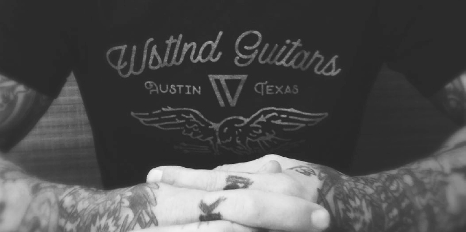

Fine, hand-crafted, custom guitars and basses created in the luthier workshop of Jeremy Hrabal in Austin, Texas. Visits by appointment only.
CONTACT Each WSTLND Guitar is handmade and meticulously crafted by Jeremy Hrabal in Austin, TX. A long-time fine woodworker as well as the bassist in noisecore outfit DSGNS, Jeremy takes great pride in his attention to detail and ability to collaborate with clients to create unique, beautiful, and great sounding instruments. All wood is hand selected from the finest domestic and exotic species available and every spec is completely customized to the clients wishes. Jeremy's standards are of the highest order, and nothing leaves his shop until it meets and exceeds every expectation.
Artists Playing Wstlnd Guitars